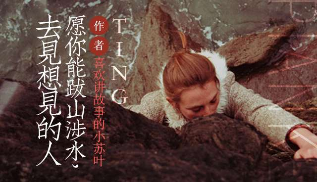

世界很美, 而你正好有空
登录
注册
忘记密码?
登录
社区账号登录:
首页
阅读
电台
碎片
动态
客户端
登录/注册
精选
全部电台

爱情
旅行
故事
音乐
电影
读诗
推荐TING | Recommendation TING
珍惜眼前人，心中无黄...
主播 / NJ文珂
22.6 k次播放 | 评论:21 | 喜欢:440
拜个晚年—愿你我都..
主播 / NJ文珂
22.6 k次播放 | 评论:21 | 喜欢:440
其实我一个朋友也没有..
主播 / NJ文珂
22.6 k次播放 | 评论:21 | 喜欢:440
TOP TING
【翻唱】你的背包..
主播 / woo崆
1.2 k次播放 | 评论:11 | 喜欢:74
忘了他，好吗？
主播 / DJ程一
5.2 k次播放 | 评论:34 | 喜欢:141
刘若英把《后来》拍...
主播 / 弓氏墨宸Cc
2.6 k次播放 | 评论:2 | 喜欢:48
热门电台 | Hot Radio
最好听的翻唱都在这里
了 (ง •̀_•́)ง
片刻翻唱
主播 / pianketing
15.3 m次播放
给你夜晚片刻安宁 ......
『片刻每日晚安推荐』
七夜电台
主播 / pianketing
45.9 m次播放
给你片刻最新发声 ......
『片刻每日新声推荐』
最新发声
主播 / pianketing
12.3 m次播放
最新发声 | New Voice
翻唱 往后余生
主播 / NJ文珂
35次播放 | 评论:0 | 喜欢:0
你喜欢过一个不喜欢自..
主播 / DJ程一
353次播放 | 评论:3 | 喜欢:14
“凡事要七分饱，情感..
主播 / 小阿田
133次播放 | 评论:0 | 喜欢:2


 旅行
旅行
 故事
故事
 读诗
读诗